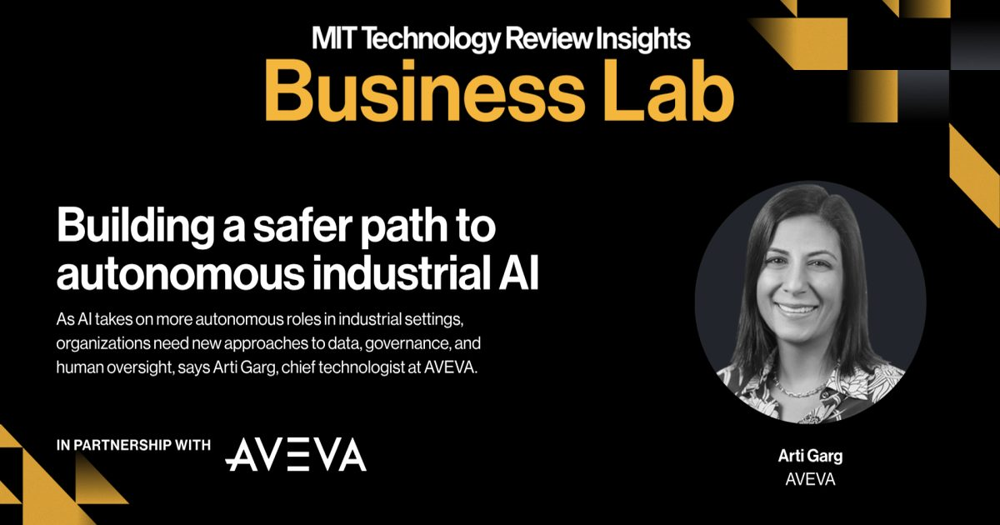

Построение более безопасного пути к автономному промышленному ИИ
Промышленный ИИ вступает в новую фазу.
После десятилетий прогнозной аналитики и других специализированных приложений достижения в базовых моделях, физическом ИИ и агентном ИИ позволяют автоматизировать более сложные задачи в промышленных средах.
Но в отличие от ИИ, который работает исключительно в цифровом мире, промышленный ИИ может напрямую взаимодействовать с физическими системами,…